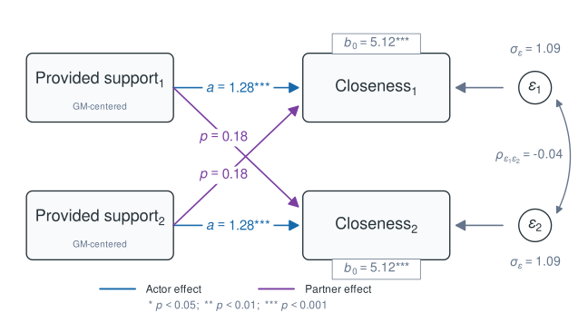
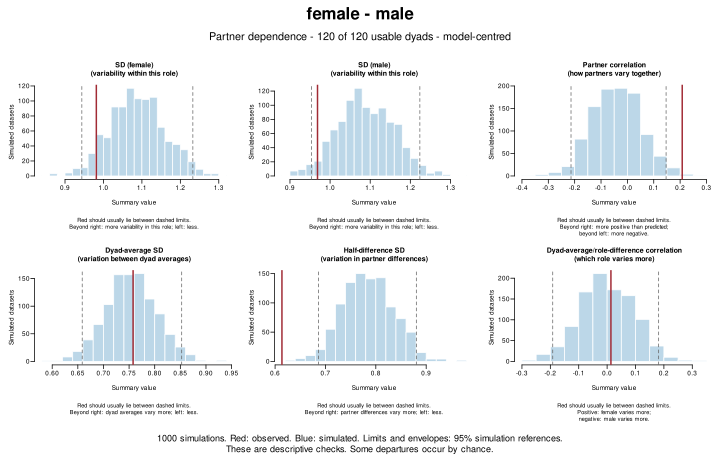
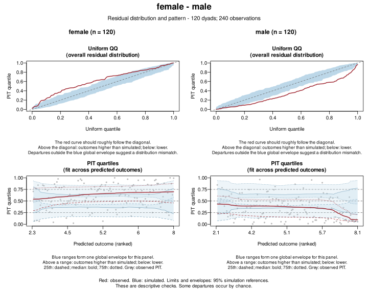
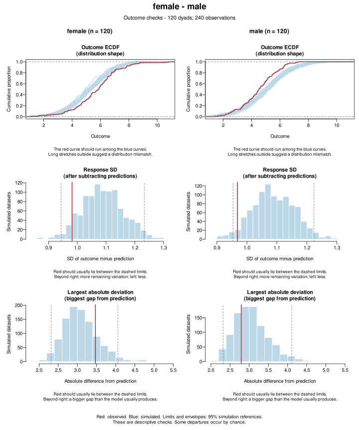

dyadMLM provides tools for dyadic multilevel modeling with linear and generalized linear mixed-effects models.
It provides functions for data preparation for various types of dyadic models and post-estimation tools for interpretation and checking of model assumptions.
If you use dyadMLM, please cite it as:
Küng, P. (2026). dyadMLM: Tools for dyadic multilevel models [Computer software]. https://doi.org/10.5281/zenodo.21481720
To include the version you used, see Citation.
Installation
Install the stable release from CRAN:
install.packages("dyadMLM")To try the latest changes and help test upcoming features, install the development version:
install.packages(
"dyadMLM",
repos = c(
"https://pascal-kueng.r-universe.dev",
"https://cloud.r-project.org"
)
)Data preparation and validation tools
prepare_dyad_data() validates dyadic data and creates model-ready columns for:
- ✅ Actor-Partner Interdependence Model (APIM): distinguishable and exchangeable dyads (vignette).
- ✅ Dyad-Individual Model (DIM): exchangeable dyads (vignette).
- ✅ Dyadic Score Model (DSM): distinguishable dyads (vignette).
All models support cross-sectional and intensive longitudinal dyadic data (e.g., daily diary data). The package also supports datasets containing multiple dyad compositions.
Preparation options include selecting and pooling compositions, and treating selected compositions as exchangeable. APIM/DIM/DSM predictors can be centered, decomposed into within-/between-person components, and lagged.
Prepared data can be used with glmmTMB, brms, and other multilevel modeling packages that support the required model structure. See the Getting Started vignette for data requirements and examples of data preparation workflows.
Post-estimation tools
| Tool | glmmTMB | brms |
|---|---|---|
| Compare nested models | ✅ Supported | Not implemented · Contribute |
| Recover exchangeable member variances and partner covariances | ✅ Point estimates | ✅ Posterior summaries and draws |
| Check partner dependence1 | ✅ Experimental | Not implemented · Contribute |
| Check residuals1 | ✅ Experimental | Not implemented · Contribute |
| Check outcomes1 | ✅ Experimental | Not implemented · Contribute |
1 Predictive checks compare the observed data and residuals with those simulated from the fitted model (similar to what the DHARMa package does).
Quick example
This is a brief cross-sectional example. For the full workflow, including intensive longitudinal versions of these models, see the APIM, DIM, or DSM vignette.
Using the simulated data bundled with dyadMLM, we select female–male dyads and, for illustration, fit an APIM that treats partners as exchangeable. We then check whether the exchangeability assumption is supported by checking whether the observed partner dependence is replicated for both genders. We also check whether the model replicates other aspects of the data well, and whether the residuals are distributed as expected.
This example uses glmmTMB.
Data preparation
library(dyadMLM)
prepared_data <- prepare_dyad_data(
dyads_cross,
dyad = coupleID,
member = personID,
# by specifying a role and requesting the arbitrary contrast alongside it,
# we can fit both a distinguishable and an exchangeable model on the same
# prepared data.
role = gender,
include_arbitrary_member_contrast = TRUE,
predictors = provided_support,
model_types = "apim",
keep_compositions = "female-male",
add_apim_gmc_predictors = TRUE,
seed = 123
)This creates grand-mean-centred actor and partner predictors and a member contrast for the exchangeable model. Inspect the prepared data with print():
print(prepared_data, n = 4)
#> # dyadMLM data
#> # Rows: 240 | Dyads: 120 | Intensive longitudinal: no
#> # Structure: dyad = coupleID, member = personID, role = gender
#> #
#> # Dyad compositions:
#> # female_x_male distinguishable 120 dyads
#> #
#> # Added columns:
#> # .composition inferred dyad composition
#> # .composition_role composition-specific member role
#> # .is_{role} composition-role indicator columns
#> # .member_contrast_arbitrary composition-specific member contrasts coded
#> # -1/+1 in arbitrary direction for
#> # exchangeability-constrained random effects.
#> # Values are 0 for other compositions
#> # .{pred}_actor APIM actor predictor: actor's original
#> # predictor values
#> # .{pred}_partner APIM partner predictor: partner's original
#> # predictor values
#> # .{pred}_gmc APIM grand-mean-centered predictor source:
#> # original values minus the mean across all
#> # retained non-missing observations
#> # .{pred}_gmc_actor APIM grand-mean-centered actor predictor:
#> # actor's value relative to the mean across all
#> # retained non-missing observations
#> # .{pred}_gmc_partner APIM grand-mean-centered partner predictor:
#> # partner's value relative to the mean across all
#> # retained non-missing observations
#> #
#> # A tibble: 240 × 15
#> personID coupleID gender closeness provided_support .composition
#> <int> <int> <fct> <dbl> <dbl> <fct>
#> 1 1 1 female 4.71 4.49 female_x_male
#> 2 2 1 male 4.61 4.76 female_x_male
#> 3 3 2 female 6.69 4.09 female_x_male
#> 4 4 2 male 5.98 6.20 female_x_male
#> # ℹ 236 more rows
#> # ℹ 9 more variables: .composition_role <fct>, .is_female <dbl>,
#> # .is_male <dbl>, .member_contrast_arbitrary <dbl>,
#> # .provided_support_gmc <dbl>, .provided_support_actor <dbl>,
#> # .provided_support_partner <dbl>, .provided_support_gmc_actor <dbl>,
#> # .provided_support_gmc_partner <dbl>Model fitting
Fit the exchangeable APIM:
model <- glmmTMB::glmmTMB(
closeness ~
# Pooled intercept
1 +
# Pooled actor and partner effects
.provided_support_gmc_actor +
.provided_support_gmc_partner +
# Mean/half-difference parametrization:
# common member variance and positive or negative partner correlation
us(1 | coupleID) +
us(0 + .member_contrast_arbitrary | coupleID),
dispformula = ~ 0, # Fix the additional Gaussian residual variance near zero
family = gaussian(),
data = prepared_data
)Inspect the fixed effects:
printCoefmat(coef(summary(model))$cond)
#> Estimate Std. Error z value Pr(>|z|)
#> (Intercept) 5.119168 0.068890 74.3095 < 2e-16 ***
#> .provided_support_gmc_actor 1.284590 0.094077 13.6546 < 2e-16 ***
#> .provided_support_gmc_partner 0.175526 0.094077 1.8658 0.06207 .
#> ---
#> Signif. codes: 0 '***' 0.001 '**' 0.01 '*' 0.05 '.' 0.1 ' ' 1Recover the member-level SDs and partner correlation:
covariance <- recover_exchangeable_covariance(model)
print(covariance, representation = "sdcor")
#> Recovered exchangeable member-level covariance
#>
#> Pair `pair_1`
#> Shared: us(1 | coupleID)
#> Difference: us(0 + .member_contrast_arbitrary | coupleID)
#>
#> Standard deviations and correlations:
#> 1 2
#> 1 member1: (Intercept) 1.089 -0.039
#> 2 member2: (Intercept) -0.039 1.089Exchangeability gives both partners the same residual variance, while the correlation between partners is still estimated freely.
For illustration, the path diagram from the APIM vignette shows these estimates:

Model checks
Next, check whether the model reproduces the data.
simulations <- simulate_dyad_responses(model, seed = 123)The model pools women and men, but the checks below look at each gender separately, since pooling can hide misfit. It can be worthwhile to check other plausible role distinctions too (such as older and younger partner).
Partner dependence
Check partner dependence, using gender to distinguish partners:
check_partner_dependence(
simulations,
dyad = coupleID,
role = gender,
# Supply the fitting data because gender is not in the model formula.
data = prepared_data
)
Here, simulations produce weaker partner correlations and larger SDs of partner half-differences than observed (red lines), suggesting misfit.
These checks alone do not establish whether fixed effects should be pooled (nested model comparisons can help assess those restrictions).
For intensive longitudinal data, also supply member and time. The check then compares member means and same-occasion deviations from them separately.
Residuals
The same simulations can be reused with check_dyad_residuals() and check_dyad_outcomes(). Use the same dyad, role, member, and data arguments. The APIM vignette shows a worked example.
check_dyad_residuals(
simulations,
dyad = coupleID,
role = gender,
data = prepared_data
)
Women’s QQ curve and PIT median rise above their envelopes and men’s fall below, so women’s observed closeness is higher than simulated and men’s is lower than simulated.
Outcome distributions
check_dyad_outcomes(
simulations,
dyad = coupleID,
role = gender,
data = prepared_data
)
The outcome ECDFs show the same issue, while response SDs and largest deviations stay within their simulated limits.
Model comparison
Together, these plots point to issues with the exchangeability assumption of the model. A next step is to fit a distinguishable APIM (shown in more detail in the APIM vignette).
model_distinguishable <- glmmTMB::glmmTMB(
closeness ~
# Gender-specific intercepts
0 + .is_female + .is_male +
# Gender-specific actor effects
.is_female:.provided_support_gmc_actor +
.is_male:.provided_support_gmc_actor +
# Gender-specific partner effects
.is_female:.provided_support_gmc_partner +
.is_male:.provided_support_gmc_partner +
# Gender-specific residual variances and their covariance
us(0 + .is_female + .is_male | coupleID),
dispformula = ~ 0, # Fix the additional Gaussian residual variance near zero
family = gaussian(),
data = prepared_data
)Use compare_nested_models() to compare the two nested models.
compare_nested_models(model, model_distinguishable)
#> Likelihood-ratio test for nested models fitted to equivalent data
#> Assumes mathematical nesting and an appropriate chi-squared reference distribution.
#>
#> Df AIC BIC logLik deviance Chisq Chi Df
#> model 5 731.67 749.07 -360.83 721.67
#> model_distinguishable 9 652.22 683.55 -317.11 634.22 87.448 4
#> Pr(>Chisq)
#> model
#> model_distinguishable < 2.2e-16 ***
#> ---
#> Signif. codes: 0 '***' 0.001 '**' 0.01 '*' 0.05 '.' 0.1 ' ' 1
#>
#> Conclusion (5% level): The likelihood-ratio test provides evidence that `model_distinguishable` fits better than `model` (p < 0.001).The comparison favors the distinguishable model. As a next step, repeat the checks from above for this model. Refer to the APIM vignette for further guidance.
Vignettes and examples
For an overview of the available functions, see the function reference.
| Vignette | Focus |
|---|---|
| Getting Started | Data structure, validation, dyad compositions, generated columns, and basic preparation |
| Actor-Partner Interdependence Model | Cross-sectional and longitudinal APIMs, distinguishability checks, covariance recovery, random slopes, and AR(1) |
| Dyad-Individual Model | DIM predictor construction, longitudinal models, and an interactive demonstration of equivalence to the exchangeable APIM |
| Dyadic Score Model | DSM predictor-score and contrast construction, longitudinal models, and the relationship to the distinguishable APIM |
The model-fitting examples use glmmTMB. Joint analysis of multiple dyad compositions is also supported with glmmTMB.
For theoretical foundations and a practical walkthrough of dyadic data analysis, from data preparation and model fitting to interpretation and diagnostics using dyadMLM with glmmTMB, see the Dyadic Data Analysis Workshop. For Bayesian APIM and DIM workflows using dyadMLM and brms, refer to Distinguishable and Exchangeable Dyads: Bayesian Multilevel Modelling (source, DOI).
Citation
If you use dyadMLM, please cite the installed package version. Run:
citation("dyadMLM")Or cite the package without specifying a version:
Küng, P. (2026). dyadMLM: Tools for dyadic multilevel models [Computer software]. https://doi.org/10.5281/zenodo.21481720
BibTeX (without version):
Questions and contributing
Questions about using dyadMLM, specifying models, or interpreting output are welcome in Q&A Discussions.
Feature or method ideas can be proposed in Ideas.
Please report any bugs you find or any concrete improvement suggestions through Issues.
Documentation, examples, tests, reviews, and code contributions are all welcome. See the contribution guide.